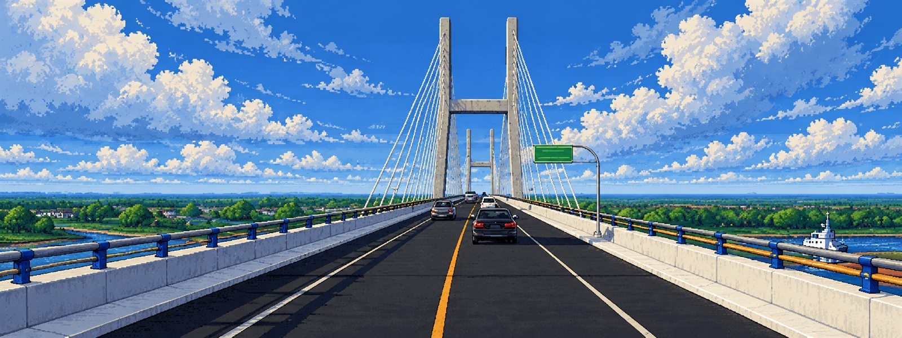
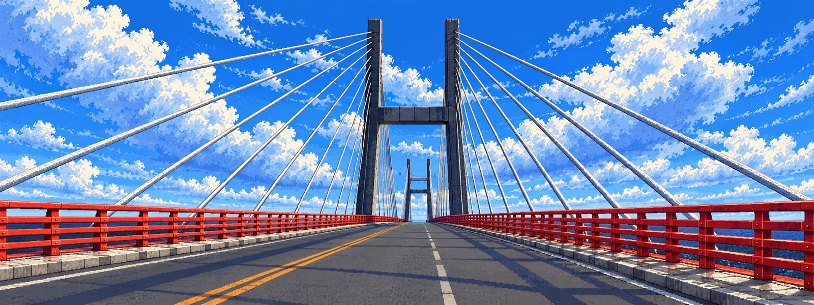
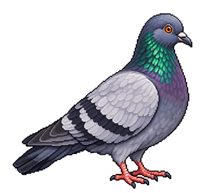
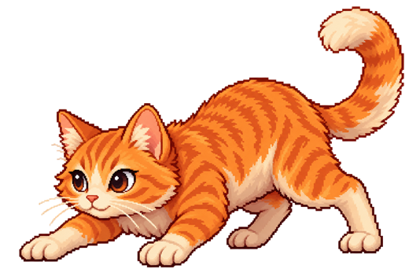

Empatía animal
Reconoce lo que cada paloma necesita.

Aventura lateral · 3 niveles
Acompaña a Nieves en una aventura de desplazamiento lateral: corre, salta obstáculos y ayuda a las palomas con alimento, agua y protección a lo largo de tres niveles.


Una misión con propósito
Nieves avanza de izquierda a derecha por escenarios inspirados en el Puente Nanay y la ciudad de Iquitos. Durante el recorrido encuentra palomas que bajan volando y necesitan alimento, agua o protección.
La dificultad aumenta en cada nivel con conos, charcos, cajas y barreras. Nieves debe moverse, correr y saltar en el momento correcto para llegar a la meta sin perder la confianza de la bandada.
Reconoce lo que cada paloma necesita.
Mantén a salvo a la gran bandada.
Una aventura inspirada en el Puente Nanay.
Supera misiones a tu propio ritmo.
El viaje completo
Cada etapa amplía el recorrido, agrega más obstáculos y propone una misión distinta de cuidado animal.

Alimenta a tres palomas con maíz y supera cinco obstáculos para conocer el movimiento lateral.

Hidrata a cuatro palomas y esquiva siete obstáculos entre cajas, charcos y barreras.
Cuida a cinco palomas, supera nueve obstáculos y ahuyenta dos veces al gato del tramo final.
Aprende los movimientos
Acércate a una paloma, espera la indicación y pulsa C para entregarle maíz en el primer nivel.
En el segundo nivel, acércate a cada ave y pulsa E para darle agua cuando aparezca la indicación.
En la etapa final observa al gato, mantén la distancia y pulsa X para que las palomas permanezcan seguras.
Usa ESPACIO para superar conos, charcos, cajas y barreras mientras continúas avanzando hacia la derecha.
Conoce al elenco
Cada personaje cumple una función clara dentro de la misión y responde a tus acciones.
La guardiana del recorrido. Camina, corre, salta y se acerca a cada ave para brindarle el cuidado que necesita.

Las palomas llegan volando, se posan en el suelo y reaccionan cuando reciben alimento, agua o protección.

Aparece en el nivel final y añade tensión al recorrido. Protege a las aves sin hacerle daño.
Resumen de la aventura
La experiencia combina desplazamiento lateral, saltos, observación y acciones de ayuda en tres niveles de dificultad progresiva.